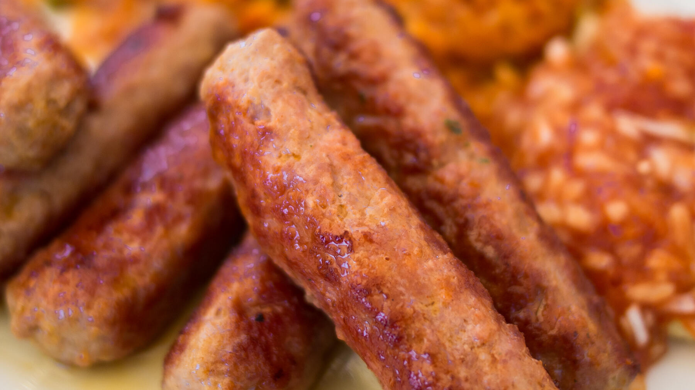

Zurück zur Übersicht
Djuvec-Reis mit Cevapcici
Würzige Hackfleischröllchen mit rotem Tomaten-Paprika-Reis. Dazu passen Ajvar und Krautsalat.
- Zeit
- 1 Std.
- Schwierigkeit
- mittel
- Kategorie
- Klassiker
- Ernährung
- mit Fleisch
Zutaten
Portionen
Für die Cevapcici
- 1 kgRinderhack
- 2 ELGehackte Petersilie, frisch oder TK
- 2Knoblauchzehen
- 2Eier
- 2 TLPaprika, edelsüß
- 1 TLGetrockneter Majoran
- 1 TLGetrockneter Oregano
- Etwas Salz und Pfeffer
Für den Djuvec-Reis
- 250 gLangkornreis
- 1Zwiebel
- 1Knoblauchzehe
- 1rote Paprika
- 1 ELAjvar, mild
- 400 mlPassierte Tomaten
- 400 mlWasser
- Etwas Salz und Pfeffer
- Etwas Öl
Zubereitung
- Für die Cevapcici den Knoblauch pressen und mit dem Hackfleisch in eine große Schüssel geben. Eier, Petersilie, Paprika, Majoran und Oregano zugeben, kräftig salzen und pfeffern und alles am besten mit den Händen vermengen.
- Kleine Röllchen mit etwa 2 cm Durchmesser formen. Direkt braten oder mit Folie abgedeckt in den Kühlschrank stellen, bis es losgeht.
- In einer Pfanne mit etwas Öl einige Minuten braten und dabei wenden. Alternativ in zwei Portionen im Airfryer auf der Grillpfanne bei 180 °C in 9–10 Minuten ohne zusätzliches Fett garen.
- Für den Reis Knoblauch und Zwiebel fein würfeln, die Paprika ebenfalls würfeln.
- Knoblauch, Zwiebel und Paprika in etwas Öl dünsten. Ajvar und Reis dazugeben und kurz mitdünsten.
- Wasser und passierte Tomaten zugießen, verrühren und etwa 25 Minuten köcheln lassen. Dabei immer wieder umrühren. Mit Salz und Pfeffer abschmecken.